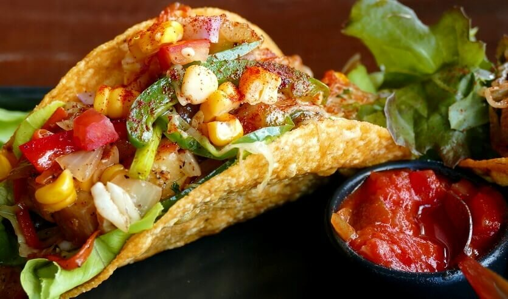
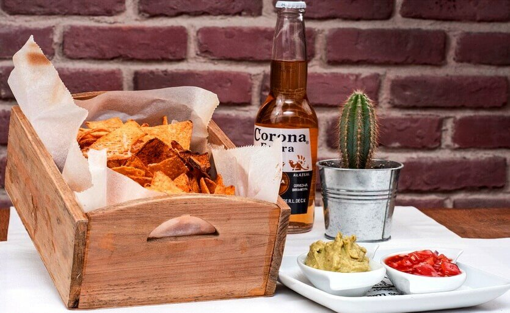

Национальная кухня

Буррито
Блюдо, которое нужно обязательно попробовать в Мексике. Это классика национальной кухни. Буррито – аппетитный сытный рулет в тортилье. Лепешка тонкая, начинка сочная. Обычно это рубленое мясо, жареные бобы, рис, томаты, тертый сыр, гуакамоле. Вегетарианцам стоит попробовать буррито с фасолью. Закуску обычно дополняют хрустящим салатом, густой сметаной, острой сальсой. Буррито – главный стрит-фуд в Мексике, который можно попробовать как в небольших уличных лавках или на рынках, так и в самых дорогих ресторанах.
Тако
Одно из самых узнаваемых блюд мексиканской кухни, которое стоит попробовать в нескольких вариациях. Основу тако составляет кукурузная или пшеничная тортилья. Выбор начинок всегда впечатляет: мясо, морепродукты, фасоль, овощи, даже мякоть кактуса. Неповторимый вкус блюду придают гуакамоле, сальса, лук, кинза, тертый сыр. Лучшие tacos в Мексике готовят в такериях (taqueria). Закуску принято есть без столовых приборов, складывая тортилью пополам.
Начос
Начос – это хрустящие чипсы из кукурузной тортильи с разнообразными добавками. Их часто используют для приготовления тех или иных национальных блюд. Но чаще всего едят с салатами или соусами.